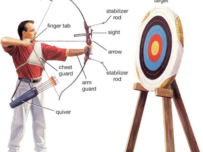

Archery is someone who is using a bow and arrows to shot the target, they can also be called an archer, bowman or toxophilite.
Toxophilite means a lover or devotee of archery.
Archery was used in the history for hunting and during combat, in modern times,
it is seen as a competitive sport and recreational activity.
Getting Started

A bow, arrow, a target object and a big space is required to play archery. In some country, you are not
allowed to use bow and arrows unless you have the permit for it. It is legal to own one however if it is used for recreation and sports.
There are places you could borrow the usage of bow and arrows to be use only in their archery range, these locations listed are from singapore.
You can join archery clubs in Singapore by visiting ranges and registering for their short courses,
it often come in three levels, beginner, intermediate, and advanced.
Using the bow
This video shows one of an example of properly using a bow to shot.
The arrow has a notch or nock at the end that must be appropriately cliped on the bow
string and placed on the knocking point where the arrow shaft sits before pulling.
Grip the bow at the bottom limb slightly below the arrow. Once the setup is done,
the bowstring can then be pulled with 3 fingers either just below the arrow or
a single index finger on top with the rest below.
Pull the bowstring with consistency where you do not have to use too much strength
and can remain aiming with stable stright arm, if the bow is too heavy,
get a lighter bow. Once the bowstring is pulled, it can be aimed before
firing, each bow may have a slight different way of setting up and aiming.